Task A新模型与GT：目标锁定及领先PSM分析
2026-11-06 · 归一化坐标有效性筛选 · 原地重算
主要结果与本次数据口径
本目录已按新规则原地重算：GT来自各User的 npy/*_gaze.npy，归一化坐标x、y均有限且位于闭区间[0,1]即保留，不使用valid或Status筛选。有效原生点为 50,440/53,091。NaN/Inf作为缺失点；valid只保留为来源诊断。原始模型预测、视频帧和时间轴沿用原来源，未重新训练；训练日志中的future_valid、验证样本数等是原训练诊断，不是本次分析GT筛选。原状态子集敏感性已移除，保留半径和时序预处理敏感性。
目标锁定：GT 的目标区域占用为 26.47%；模型中 Future 500 的目标概率最高，为 7.73%。 四模型的目标占用差及其参与者配对重采样区间均低于零。
Lead PSM：四阶段合并的 GT 位置峰为左 415 ms、右 341 ms。所有合并位置曲线均未通过可靠领先规则。共同原因是近峰过宽，不能仅凭正峰位或正重采样范围认定可精确定位的领先。主分析 100 个来源×条件组合中有 3 个满足探索性 lead 规则，其中 3 个在逐一剔除每位参与者后仍为 lead。
这些结果来自验证集上的探索性比较，验证集参与过checkpoint选择。预测horizon不等于实际测得的器械提前量。
1．模型、样本与共同支持
| 来源 | 模型目录 | horizon / ms | checkpoint |
|---|---|---|---|
| Current | current_transition | 0 | best-epoch=16.ckpt |
| Future 500 | future500_transition | 500 | best-epoch=00.ckpt |
| Future 1000 | future1000_transition | 1000 | best-epoch=19.ckpt |
| Future 1500 | future1500_transition | 1500 | best-epoch=00.ckpt |
| 录像 | 参与者 | 原生帧数 | 每模型预测锚点 |
|---|---|---|---|
| User1_6_1 | User1 | 7327 | 3664 |
| User2_3_1 | User2 | 13731 | 6866 |
| User5_2_1 | User5 | 14729 | 7365 |
| User5_9_1 | User5 | 7939 | 3970 |
| User11_2_1 | User11 | 9365 | 4683 |
每模型共有 26,548 个相同锚点。Target locking 主分析共同有效锚点为 24,120 个，时间权重合计 1234.02 秒。不同分析的几何和运动支持要求不同，不能共用一个分母。
每录像先汇总，参与者内对录像等权，再参与者间等权。User5的两段录像先在该参与者内汇总，不当作两个人。
Gaze坐标来自每个User的NPY；video_ts.csv按原始Frame_Number提供精确录制时间。原始眼动CSV仅用于来源诊断。分析包含reach、grab、transfer、place ring四阶段，排除drop ring、none和空阶段。
2．Target locking：概率分配与坐标解码
| 来源 | 目标占用 % | PSM占用 % | 目标偏好 C | 目标占用−GT 百分点 [95%重采样范围] | 目标Brier |
|---|---|---|---|---|---|
| GT | 26.47 | 7.89 | 0.80 | 参照 | 不适用 |
| Current | 6.78 | 6.67 | 0.50 | -19.70 [-24.08, -12.88] | 0.2227 |
| Future 500 | 7.73 | 7.14 | 0.52 | -18.75 [-22.96, -11.99] | 0.2186 |
| Future 1000 | 5.44 | 4.83 | 0.53 | -21.04 [-25.24, -14.20] | 0.2319 |
| Future 1500 | 4.96 | 5.19 | 0.49 | -21.51 [-25.92, -14.41] | 0.2342 |
模型值为热图落入区域的概率质量；GT为注视点落入区域的时间占比。Target为有效标注点均值周围50 px圆盘；PSM为左右DLC点50 px圆盘并集。T/P/O/N分别表示目标独占、PSM独占、重叠、其他。目标占用=T+O，PSM占用=P+O，C=T/(T+P)，须结合独占占用D=T+P及绝对占用解读。
32×40热图按网格格内均匀概率质量的像素面积积分。Brier以GT区域二元事件为参照，越低越好；不等于完整gaze分布误差。范围来自10,000次参与者配对bootstrap，属于探索性估计。
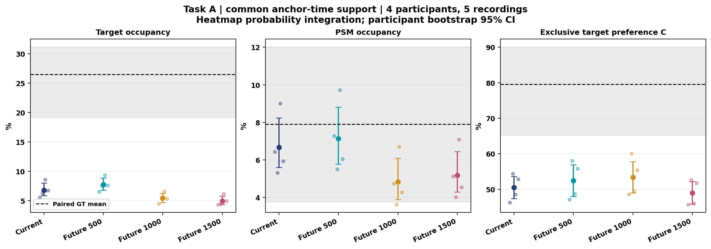
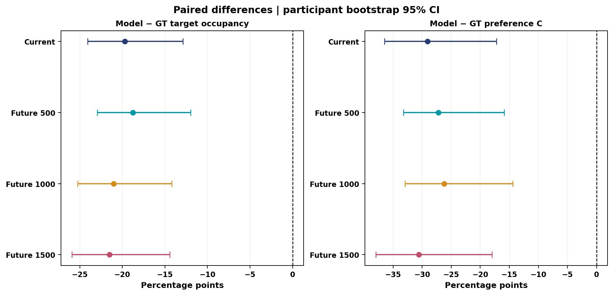
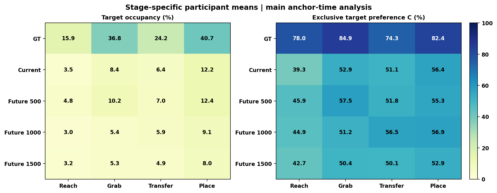
| 模型 | 热图目标概率 % | 期望点目标占用 % | argmax目标占用 % |
|---|---|---|---|
| Current | 6.78 | 13.10 | 23.81 |
| Future 500 | 7.73 | 16.63 | 25.42 |
| Future 1000 | 5.44 | 10.74 | 18.96 |
| Future 1500 | 4.96 | 6.50 | 18.80 |
以Future 500为例，热图目标概率为7.73%，期望点目标占用为16.63%，argmax目标占用为25.42%；GT为26.47%。不同表示回答不同问题，不能把热图概率当作所有解码方式的命中率。总体占用接近也不证明逐帧预测正确或统计等效。
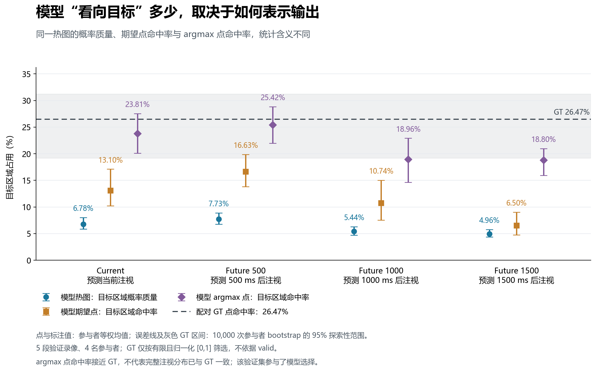
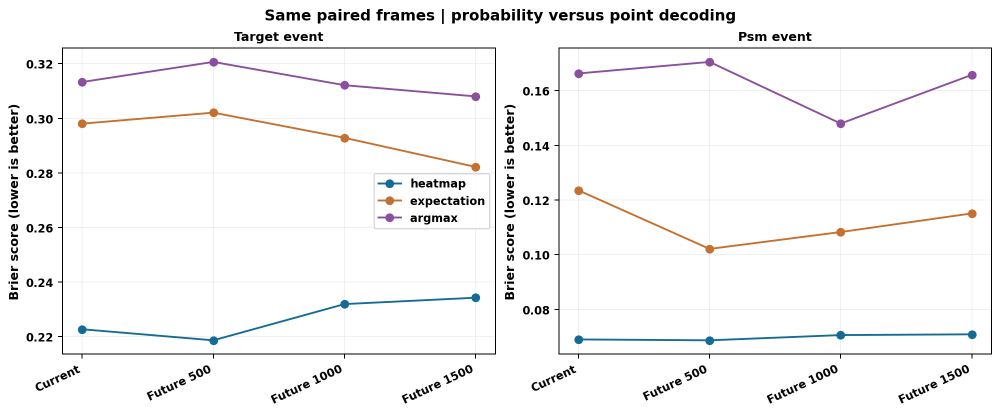
3．Model gaze与GT gaze是否领先PSM
正lag定义为corr(gaze(t), PSM(t+lag))，表示gaze在前。模型轨迹取热图期望坐标；主分析将预测放在输入锚点时刻，固定左右器械分别比较。argmax仅用于空间占用补充。
| 信号 | PSM侧 | 来源 | 峰位 ms | 峰值r | 95%重采样范围 ms | 判定 |
|---|---|---|---|---|---|---|
| 位置 | 左 | GT | 415 | 0.315 | 317～610 | 证据不足 |
| 位置 | 左 | Current | 24 | 0.323 | -73～49 | 证据不足 |
| 位置 | 左 | Future 500 | 73 | 0.333 | 0～171 | 证据不足 |
| 位置 | 左 | Future 1000 | 220 | 0.312 | 73～341 | 证据不足 |
| 位置 | 左 | Future 1500 | 195 | 0.273 | 49～366 | 证据不足 |
| 位置 | 右 | GT | 341 | 0.433 | 268～488 | 证据不足 |
| 位置 | 右 | Current | -49 | 0.526 | -73～0 | 证据不足 |
| 位置 | 右 | Future 500 | 49 | 0.545 | 24～122 | 证据不足 |
| 位置 | 右 | Future 1000 | 220 | 0.512 | 146～244 | 证据不足 |
| 位置 | 右 | Future 1500 | 220 | 0.524 | 195～220 | 证据不足 |
| 速度 | 左 | GT | 366 | 0.015 | 98～1561 | 证据不足 |
| 速度 | 左 | Current | 171 | 0.022 | -463～488 | 证据不足 |
| 速度 | 左 | Future 500 | 49 | 0.024 | 49～1317 | 证据不足 |
| 速度 | 左 | Future 1000 | 73 | 0.016 | 49～1317 | 证据不足 |
| 速度 | 左 | Future 1500 | 171 | 0.020 | -1927～1317 | 证据不足 |
| 速度 | 右 | GT | -195 | 0.018 | -195～829 | 证据不足 |
| 速度 | 右 | Current | -24 | 0.032 | -24～73 | 接近同步 |
| 速度 | 右 | Future 500 | 0 | 0.033 | -24～220 | 证据不足 |
| 速度 | 右 | Future 1000 | 0 | 0.031 | -195～220 | 证据不足 |
| 速度 | 右 | Future 1500 | 171 | 0.027 | -122～220 | 证据不足 |
所有合并位置曲线均未通过可靠领先规则。共同原因是近峰过宽，不能仅凭正峰位或正重采样范围认定可精确定位的领先。
合并速度曲线峰值r为0.0149–0.0327。同步或领先是峰位置分类，不自动表示强运动耦合。
组判定要求至少3名参与者、完整lag支持、正相关峰、非边界或竞争峰、0.01近峰宽及重采样范围宽均不超过0.4秒、边界抽样频率不超过5%。主同步带为±100 ms。通过峰定位要求后，范围下限>100 ms才分类为lead。5,000次参与者重采样范围没有校准为生理时延置信区间。
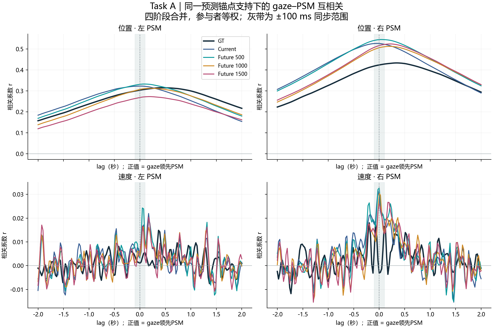
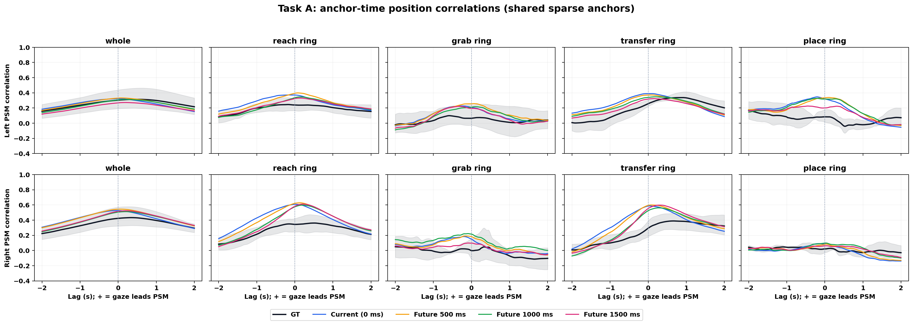
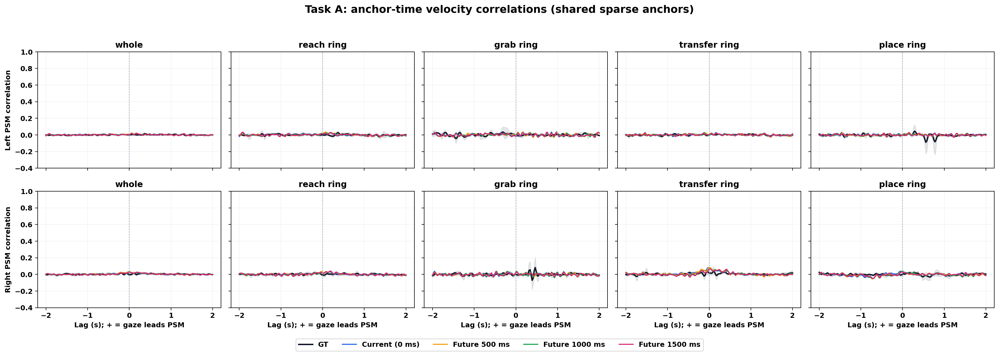
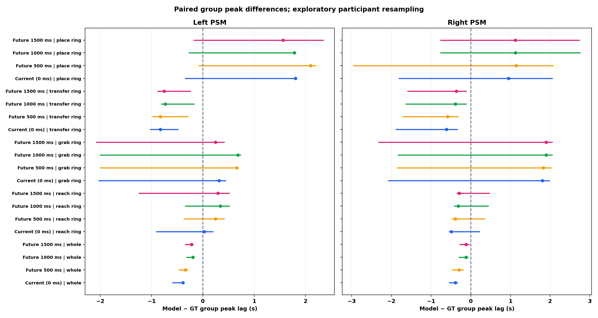
4．分阶段判定及未来时间轴
| 来源 | 支持领先 | 接近同步 | 支持滞后 | 证据不足 |
|---|---|---|---|---|
| GT | 0 | 0 | 0 | 20 |
| Current | 0 | 3 | 0 | 17 |
| Future 500 | 0 | 0 | 0 | 20 |
| Future 1000 | 1 | 0 | 0 | 19 |
| Future 1500 | 2 | 0 | 0 | 18 |
每个来源有20个主条件，来源×条件共100个；这些条件相关，不能当成独立受试者。以下表仅列主配置中分类为lead的条件，逐人剔除以当前新结果重新统计。
| 来源 | 阶段 | 侧 | 信号 | 峰位 [范围] ms | 峰值r | 逐人剔除仍为lead |
|---|---|---|---|---|---|---|
| Future 1500 | reach ring | 右 | 位置 | 220 [146, 293] | 0.611 | 4/4 |
| Future 1000 | transfer ring | 右 | 位置 | 268 [244, 439] | 0.562 | 4/4 |
| Future 1500 | transfer ring | 右 | 位置 | 293 [220, 463] | 0.598 | 4/4 |
| 来源 | 阶段 | 侧 | psm_stage峰位 [范围] ms | within_stage峰位 [范围] ms | within_stage判定 |
|---|---|---|---|---|---|
| Future 1500 | reach ring | 右 | 220 [146, 293] | 146 [73, 171] | 证据不足 |
| Future 1000 | transfer ring | 右 | 268 [244, 439] | 73 [0, 220] | 证据不足 |
| Future 1500 | transfer ring | 右 | 293 [220, 463] | 146 [49, 244] | 证据不足 |
psm_stage只约束PSM属于当前阶段，允许较早或较晚阶段的gaze配对；within_stage要求同一次连续阶段。主条件若在within_stage不再支持领先，不能将其解释为阶段内部稳定提前。
| 模型 | 侧 | 目标时间轴模型lag [范围] ms | 模型判定 | 同期GT lag [范围] ms | GT判定 |
|---|---|---|---|---|---|
| Current | 左 | 24 [-73, 49] | 证据不足 | 415 [317, 610] | 证据不足 |
| Current | 右 | -49 [-73, 0] | 证据不足 | 341 [268, 488] | 证据不足 |
| Future 500 | 左 | -415 [-488, -341] | 证据不足 | 415 [317, 585] | 证据不足 |
| Future 500 | 右 | -463 [-488, -415] | 证据不足 | 341 [293, 488] | 证据不足 |
| Future 1000 | 左 | -780 [-902, -659] | 证据不足 | 415 [317, 610] | 证据不足 |
| Future 1000 | 右 | -805 [-854, -780] | 证据不足 | 341 [268, 488] | 证据不足 |
| Future 1500 | 左 | -1293 [-1341, -1146] | 证据不足 | 415 [293, 585] | 证据不足 |
| Future 1500 | 右 | -1293 [-1317, -1293] | 证据不足 | 341 [268, 488] | 证据不足 |
Future 500 左/右为 -415/-463 ms；Future 1000 左/右为 -780/-805 ms；Future 1500 左/右为 -1293/-1293 ms。
将Future h预测放在t+h后，是与目标时刻同期GT和PSM的关系；锚点时间分析则描述输入时刻给出的预测与后续PSM的关系。两种lag不能混称，标称500/1000/1500 ms不能当作实测提前量。不同horizon有效支持不同，不能把目标时间均值直接作共同支持排名。
预测为未来屏幕坐标，未做镜头运动配准；推理和显示延迟未测量，输入锚点时刻不是经过测量的实际显示时刻。
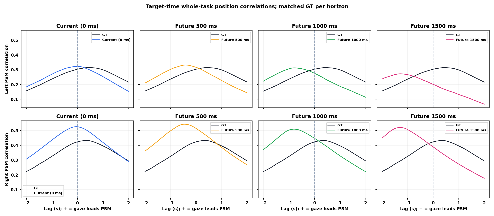
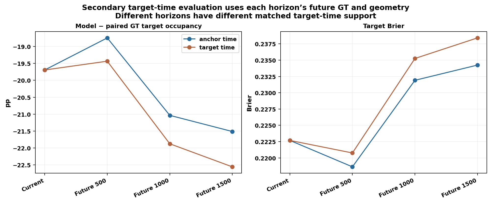
5．稳健性与时间审计
Target locking保留25/100 px半径敏感性，所有分支均使用相同的坐标有效性规则，不再按valid设置子集。
| 半径分支 | 模型 | 目标占用差 pp | 95%重采样范围 pp |
|---|---|---|---|
| r25 | Current | -9.25 | [-12.82, -5.03] |
| r25 | Future 500 | -8.99 | [-12.59, -4.78] |
| r25 | Future 1000 | -9.62 | [-13.28, -5.35] |
| r25 | Future 1500 | -9.74 | [-13.39, -5.41] |
| r100 | Current | -32.24 | [-36.26, -28.22] |
| r100 | Future 500 | -29.47 | [-33.11, -25.83] |
| r100 | Future 1000 | -35.73 | [-38.85, -32.61] |
| r100 | Future 1500 | -37.49 | [-41.56, -34.13] |
逐一剔除参与者后的16个主目标占用差为-25.06至-17.09个百分点。完整原生GT参考目标占用为26.52%，共同模型锚点GT为26.47%；原生参考不替代配对GT分母。
位置预处理为41 Hz网格上的3点居中平均；速度从未平滑网格独立SG5后差分。主搜索窗为±2秒，±4秒作为敏感性；阶段条件至少2秒配对，whole至少5秒。最大插值间隙0.1秒，不外推。Lead中DLC有限低置信度、图外点和跳点仅标记；Target locking的PSM几何仍须有效并落在图像范围内，这与GT的valid字段无关。
主lead条件在平滑、滤波边缘及搜索窗敏感性中的保留情况如下。
| 来源 | 阶段 | 侧 | 配置 | 仍为lead / 配置数 |
|---|---|---|---|---|
| Future 1500 | reach ring | 右 | position_unsmoothed, primary, position_smooth5, trim_edges, window4 | 5/5 |
| Future 1000 | transfer ring | 右 | position_unsmoothed, primary, position_smooth5, trim_edges, window4 | 5/5 |
| Future 1500 | transfer ring | 右 | position_unsmoothed, primary, position_smooth5, trim_edges, window4 | 5/5 |
GT完整原生与稀疏模型锚点的配对比较中，10个位置条件有0个组峰位变化，最大绝对变化0.0 ms；具体完整支持与区间见采样配对表。
训练PTS与录制时间轴累计差的最大绝对值为284.02 ms，保存future标签实际horizon偏差最大为67.70 ms。所有来源按原视频帧映射到同一录制时间；这些审计值不能自动当作主分析gaze–PSM相对错位。41 Hz插值不会恢复stride=2没有预测的独立时间信息。
异用户gaze参考共50个条件，有效参考次数为5000–5000；其超越比例只作描述性参照，不是正式领先检验的p值。
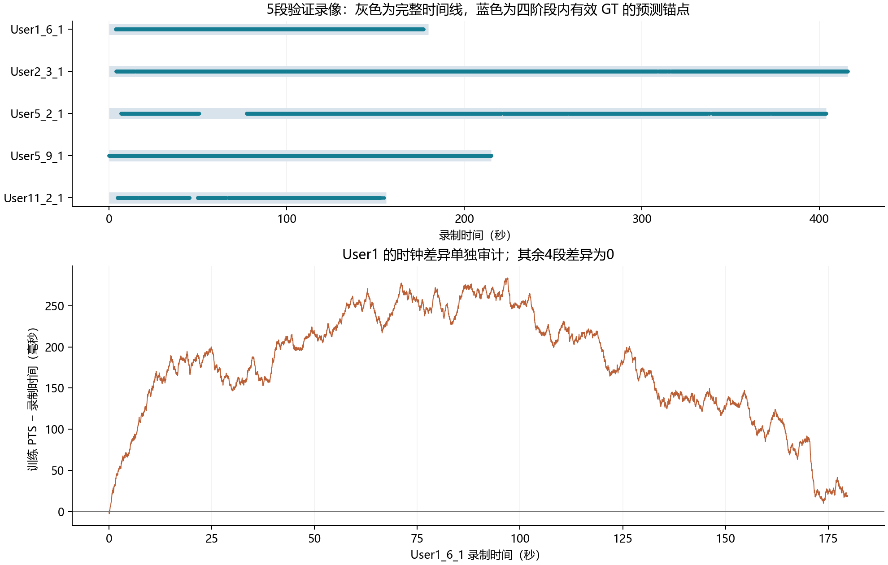
6．数据、报告与解释范围
本次直接更新当前目录中的分析输入、数值、图表和报告，没有备份该目录旧结果。原始数据集NPY、训练模型预测和其他分析目录不作为输出覆盖目标。数值核心和参数快照保存在code_snapshot及分支目录。
4名参与者、5段验证录像不足以支持强泛化；该验证集已用于选模。圆盘区域不是完整物体或器械尖端mask；离线居中滤波和互相关不证明因果或精确生理提前。